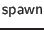

All of the functions in this subsection are client-side only.
Clients can open alert and confirm dialog boxes, in the usual annoying JavaScript way.
Any transaction may be run in a new thread with the  function.
The current thread can be paused for at least a specified number of milliseconds.
A few functions are available to registers callbacks for particular error events. Respectively, they are triggered on calls to , uncaught JavaScript exceptions, failure of remote procedure calls, the severance of the connection serving asynchronous messages, or the occurrence of some other error with that connection. If no handlers are registered for a kind of error, then a JavaScript alert() is used to announce its occurrence. When one of these functions is called multiple times within a single page, all registered handlers are run when appropriate events occur, with handlers run in the reverse of their registration order.
There are also functions to register standard document-level event handlers.
Versions of standard JavaScript functions are provided that event handlers may call to mask default handling or prevent bubbling of events up to parent DOM nodes, respectively.
Finally, here is an HTML tag to leave a marker in the <head> of a document asking for some side-effecting code to be run. This pattern is much less common in Ur/Web applications than in normal HTML/JavaScript applications; see Section 8.6.3 for the more idiomatic, functional way of manipulating the visible page.
Note that the Ur/Web version of <script> is used like <script code={...}/>, rather than <script>...</script>.